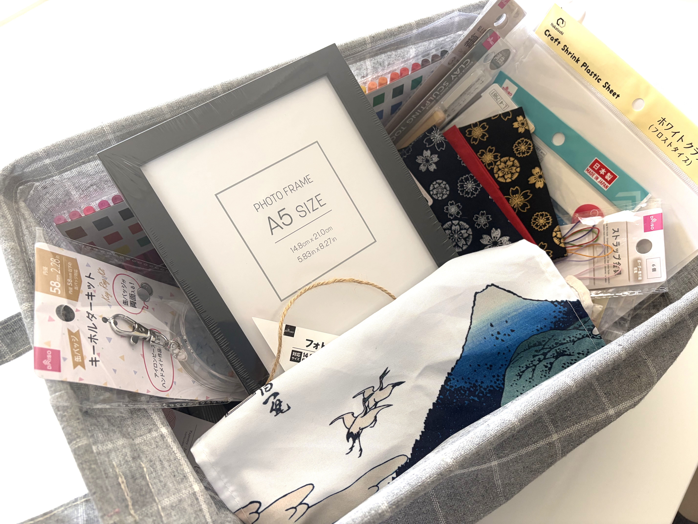

TRY
あなたも100均で作ってみる
身近な材料で、浮世絵をもっと自由に楽しんでみましょう。
HOW TO MAKE
制作の流れ
浮世絵をモチーフにした作品づくりは、アイテム選びからスタート。 100均で手に入る身近な材料を使って、自由に楽しみながら作ってみましょう。
STEP 01
アイテムを決める
アクセサリー、ペーパークラフト、小物など、 作ってみたいアイテムを決めます。
STEP 02
浮世絵のモチーフを選ぶ
好きな浮世絵や浮世絵師から、 作品に使いたいモチーフを選びます。
STEP 03
材料をそろえる
100円ショップなどで、 作品づくりに必要な材料を準備します。
STEP 04
制作する
材料を加工し、浮世絵をモチーフにした オリジナル作品を制作します。
STEP 05
アレンジする
色や素材、形などを工夫して、 自分らしい作品に仕上げます。
STEP 06
完成！
世界にひとつだけの、
浮世絵ハンドメイド作品の完成です。
#浮世絵100均チャレンジ
浮世絵を身近なハンドメイドに
このプロジェクトでは、100均で手に入る身近な材料を使って、 浮世絵をモチーフにしたアクセサリーや小物、ペーパークラフトなどを制作します。 好きな浮世絵や浮世絵師からモチーフを選び、自分なりのアイデアを加えることで、 暮らしの中で楽しめる作品にアレンジできます。
特別な材料や道具がなくても、身近な素材を組み合わせることで、 浮世絵の魅力を気軽に楽しむことができます。 ぜひ自分だけの浮世絵ハンドメイド作品を作ってみてください。
